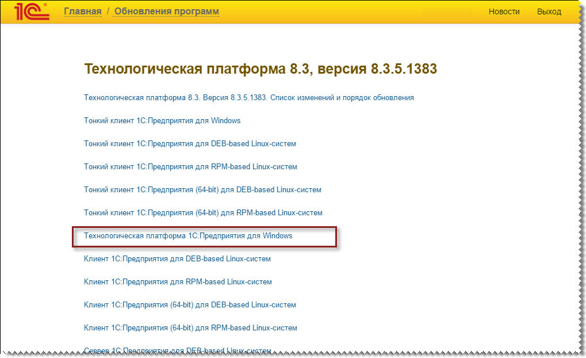
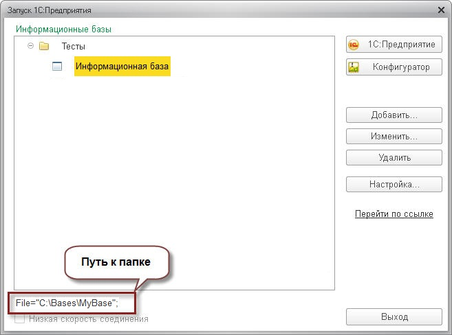

In 1C:Application update service on the 1C:ITS website (portal.1c.ru), download the latest version of the 1C:Enterprise 8.3 platform distribution package. On demand,
type username and password.
Select the latest officially issued version of the technological platform.
To download the file, go to the 1C:Enterprise platform for Windows section.

Click the Download distribution package link and set the file path. Remember the folder the file is saved to:

Please note: to install the program, the Windows user must have administrator rights! Unpack the downloaded archive file. Click the Setup.exe file to run it:

Follow the instalation wizard instructions.
Locate and open the directory containing the infobase:


Click the 1C:Enterprise to start working with the selected infobase on the new platform version.